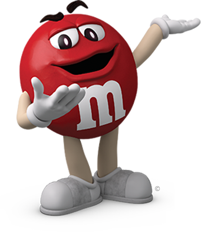
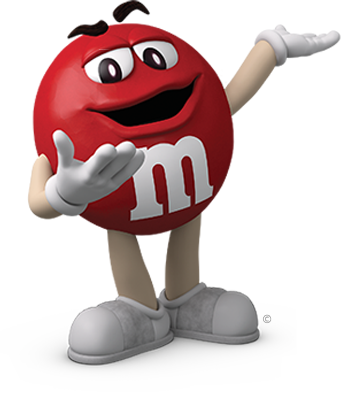
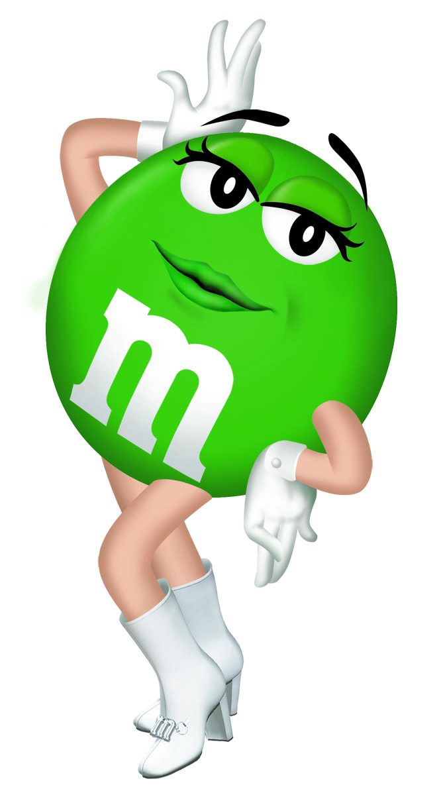
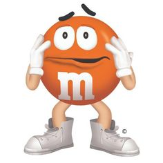
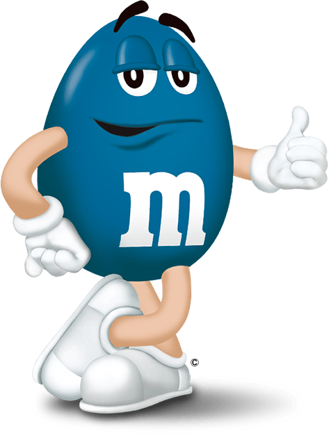

Red

The cynical and sardonic Red (originally voiced by Jon Lovitz, thereafter Billy West) is a mascot for milk chocolate, peanut butter, and crispy M&M's.

The cynical and sardonic Red (originally voiced by Jon Lovitz, thereafter Billy West) is a mascot for milk chocolate, peanut butter, and crispy M&M's.

The seductive Green (voiced by Cree Summer), is the mascot for both dark chocolate mint and peanut butter M&M's. She was originally a milk chocolate mascot.

The slightly neurotic Orange (voiced by Eric Kirchberger), was introduced when Crispy M&M's were first released and returned when Pretzel M&M's debuted in 2010.

The "cool one", Blue (voiced by Phil Hartman until his death in 1998, thereafter Robb Pruitt), is the mascot for almond M&M's.
In 1960, M&M's were available in yellow, green and red. Orange was added in 1976. Mars created a marketing campaign to add a new color in 1995. The general public was invited to vote on their favorite shade. Blue was the winner. Another "election" in 2002 added purple to the mix. In 1996, custom M&M's colors were introduced. Today, every shade of the rainbow is available to commemorate anything from weddings to births to graduations. Special messages can also be printed on the M&M's. Seasonal color mixes are available in red and green for Christmas and pastels for Easter.
Early black-and-white advertizing for the candy featured two talking, anthropomorphic M&M characters - one plain and one peanut - diving into a swimming pool full of chocolate. Since the, The M&M's animated characters have taken on a life of their own. Concurrent with 1995's blue M&M campaign, M&M's introduced computer animated "spokes-candies" in their television commercials. The depiction and campaign of the M&M's were made by Will Vinton in 1995. Vinton was formally known for his claymation on The California Raisins Band in 1986. Around the time he worked on CGI Projects, he made the depiction of the M&M's as more mature than most food mascots. Today, an online game allows visitors to create their own M&M's characters using different eyes, hairstyles and accessories.
Until the debut of M&M's Minis in 1996, the candy only came in one size. The minis were packaged in small tubes, reminiscent of the original packaging. Three years later, Mars brought out Crispy M&M's, the first new flavor since Peanut M&M's were introduced 45 years earlier. Other flavors today include almond, dark chocolate and peanut butter. A line of M&M's Premiums, introduced in 2009, features gourmet flavors like raspberry almond, mint chocolate and mocha. Innovations come every few years now, with create-your-own, peanut butter and pretzel flavored among the latest offerings.
Mars introduced the Peanut M&M in 1954, which was a significant year in the candy's history. The famous slogan "melts in your mouth, not in your hands" was introduced, and Mars unveiled the popular animated M&M's characters in television commercials.